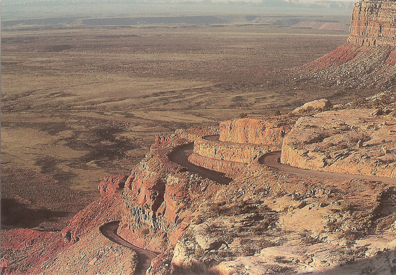
.
From the small town of Bluff (whose population had increased due to a uranium prospecting boom in the 1950s, but is now back down to about 300 residents) we took the Mokee (Moqui) Dugway down to the plains where we would find Mexican Hat and, eventually, Monument Valley.
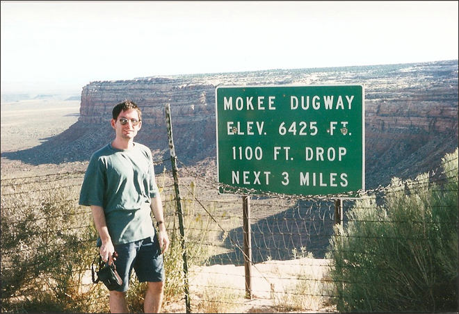
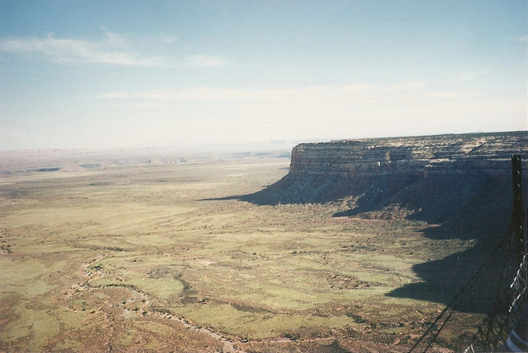
The name 'Mexican Hat' comes from a curiously sombrero-shaped rock outcropping on the north-east edge of town; the rock measures 60 foot (18m) wide by 12 foot (3.7m). The 'Hat' has two rock-climbing routes ascending it.
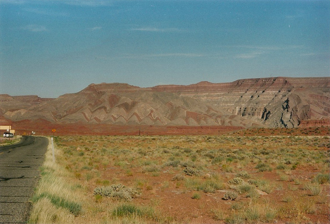
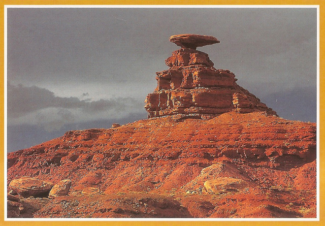
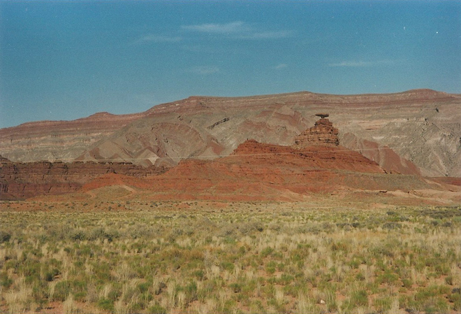
Accommodation was in short supply in Mexican Hat and the best we could find was the back half of a trailer. Fairly grim but at least we can say we stayed in the charmingly-named 'Hat'. Supper conveniently included several margaritas which helped us sleep and ignore the uncomfortable bed.
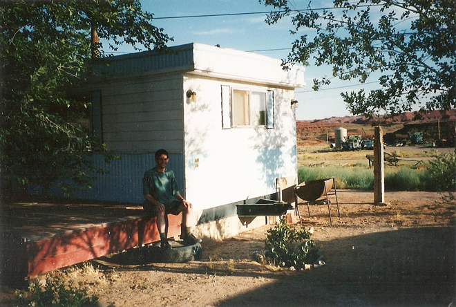
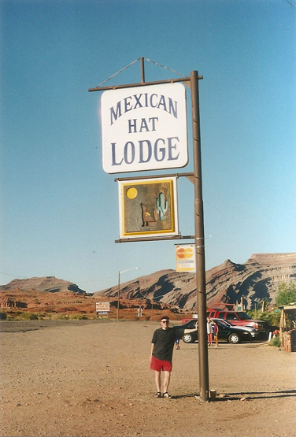
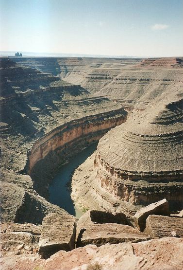
Goosenecks State Park overlooks a deep meander of the San Juan River. The park is located near the southern border of the state a short distance from Mexican Hat. Millions of years ago, the Monument Upwarp forced the river to carve incised meanders over 1,000 feet (300m) deep as the surrounding landscape slowly rose in elevation. Eroded by water, wind, frost and gravity, this is a classic location for observing incised meanders.
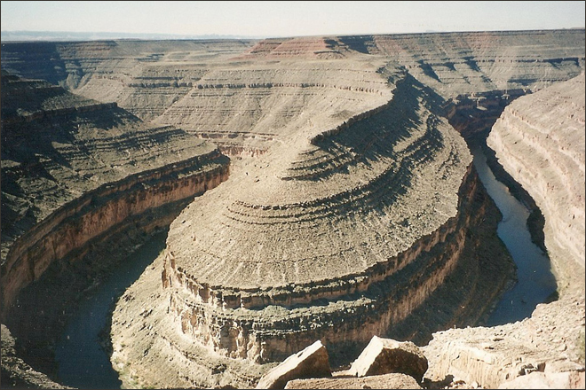
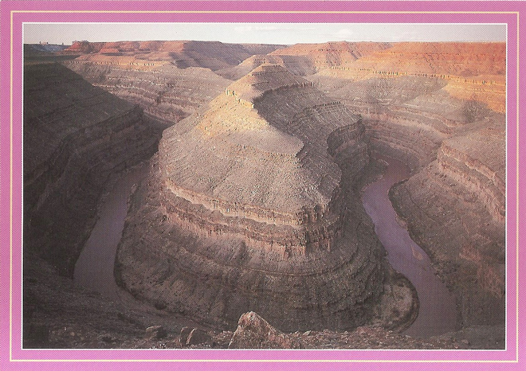
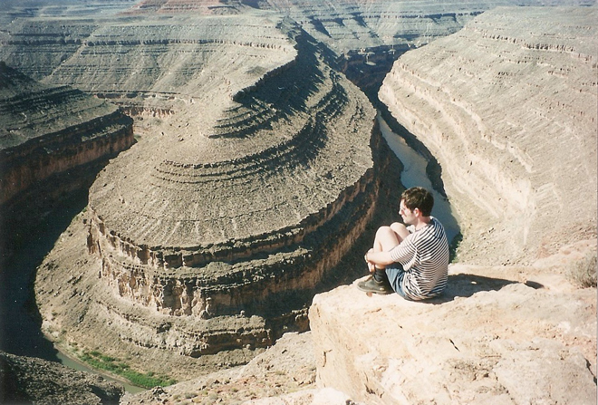